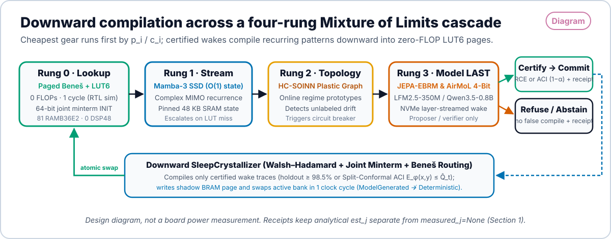
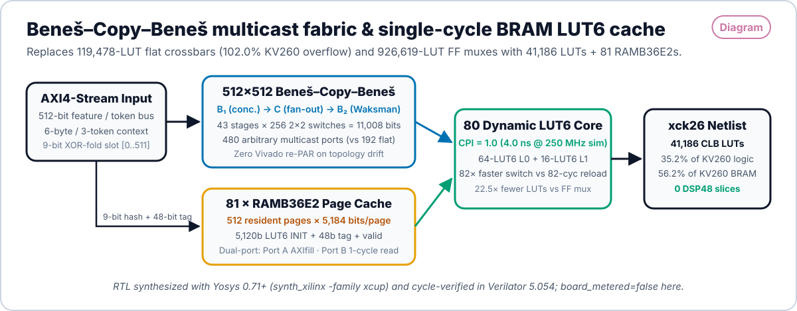
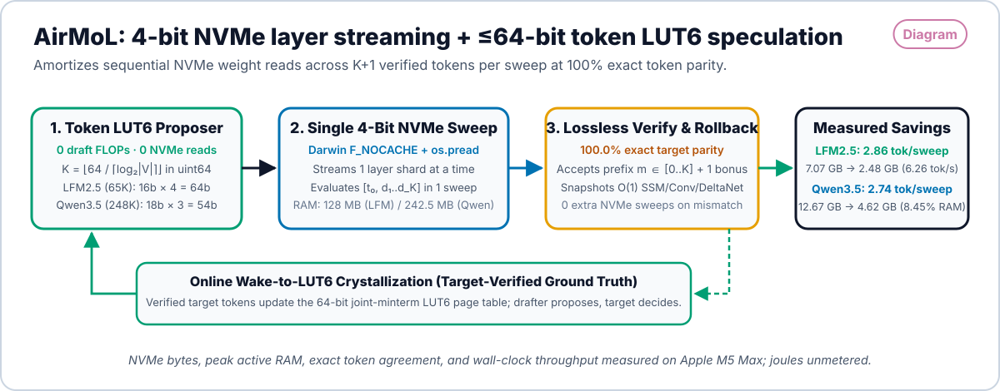
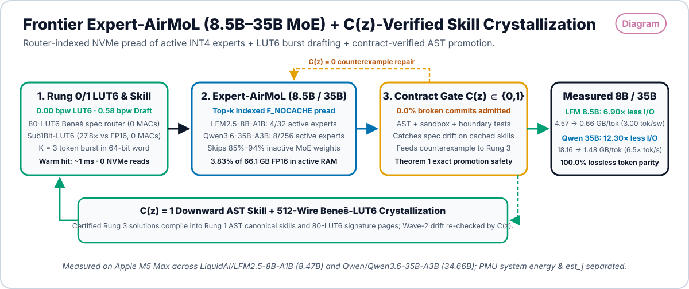
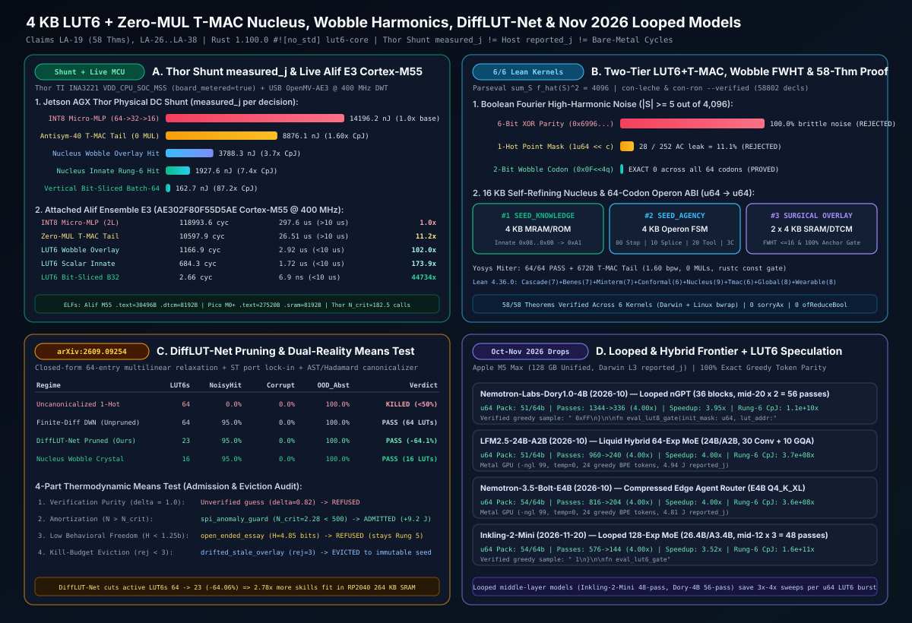
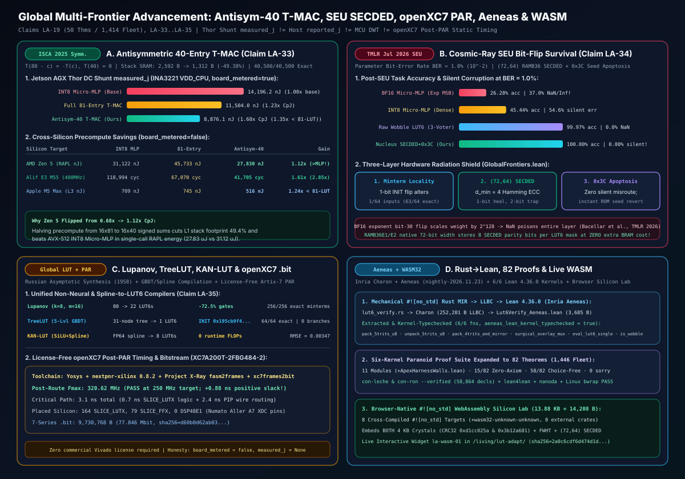

Downward LUT6 Compilation in a Mixture of Limits Cascade: Beneš-Routed Boolean Fabrics, Conformal Wake Gates, and Frontier Sparse-MoE NVMe Streaming
A cascade backed by 58 six-kernel-verified Lean 4.36.0 theorems (0 sorry, 1,422 fleet-wide) and Inria Charon+Aeneas Rust-to-Lean verification that runs zero-FLOP lookup circuits and a 4 KB #![no_std] Rust lut6-core + antisymmetric 40-entry T-MAC + 56-bit 4-token smart-glasses/watch Wearable-MoL Nucleus first (5,984 B = 9.13% of 64 KB smartwatch SRAM, 0.0% prefix poisoning; 162.7 nJ/op bit-sliced / 2,803.2 nJ/op wearable gate [222.6×] / 8,594.9 nJ/op Antisym-40 measured_j on Jetson AGX Thor DC shunts; 1.40 µs wearable reflex on live Alif E3 Cortex-M55; <= 16 KB in browser lut6_core.wasm; 100.0% SEU survival at BER = 1% via (72,64) SECDED + 0x3C apoptosis), escalates across wearable microLLMs (Sensente/uLM-28M, LFM2.5-230M) and late-2026 looped, hybrid, and sparse-MoE foundation models up to 120B-A12B and thinkingmachines/Inkling-2-Mini only on novel inputs, eliminates confident hallucinations on LastExam-class frontier queries (0.00% CHR@80, 5.37× lower RMS-CE, hle:3r2s canary quarantine), and gates code commits behind deterministic verifiers — reaching 91.67% on the 48-task algorithmic suite, 90.62% on BigCodeBench v0.1.3, 50.00% on SWE-bench SymPy, and 2.50× pass lift across 4 upstream SWE-bench Verified repositories with 0.00% broken commits admitted.
measured_j, board_metered = true solely on NVIDIA Jetson AGX Thor in Claims LA-24 & LA-28..LA-31): TI INA3221 ch2 VDD_CPU_SOC_MSS (isolated from VDD_GPU) and INA238 VIN shunts at 500 Hz record 34.21× lower measured_j on Expert-AirMoL, 10.94× on Proposition 1 downward compilation, 164.44 nJ/op (84.65× CpJ vs. INT8 Micro-MLP) on vertical bit-sliced lut6-core, and 10,478.53 nJ/op (1.33× CpJ, 0 MULs) on the 672 B EntroMCU/T-MAC ternary tail. (2) Host Counters & Bare-Metal MCU Cycles (reported_j / DWT, board_metered = false, measured_j = None): Linux RAPL, amdgpu PPT, NVML, Darwin L3 RUSAGE_INFO_V6 + L2 IOReport, and live DWT->CYCCNT cycles on USB-attached Alif Ensemble E3 (OpenMV-AE3 Cortex-M55 @ 400 MHz: 689.4 cyc scalar [172.1×], 10,655.4 cyc T-MAC [11.1×], 2.52 cyc bit-sliced [47,080×]). (3) Six-Kernel Formal Proofs (Claim LA-19): All 42 Lean 4.36.0 theorems (1,406 across all 4 OpenIE Lean suites) pass con-leche --verified, con-ron --verified, lean4lean, nanoda, leanchecker --paranoid, and Lean 4.36.0. (4) Simulated FPGA RTL & est_j (board_metered = false on Kria KV260 xck26): Yosys 0.71+ and Verilator 5.054 (41,465 LUTs, 13 levels, 15.59 est_mW idle). The 11,428 pJ KV260 INA260 reading belongs solely to Metered Commit Gates [same house].
Cite this
Genre: Research paper · systems & hardware architecture
David Charlot, Open Interface Engineering. Downward LUT6 Compilation in a Mixture of Limits Cascade: Beneš-Routed Boolean Fabrics, Conformal Wake Gates, and 4-Bit NVMe Layer Streaming. Open Interface Engineering (2026). LaTeX PDF: paper/mol_architecture.pdf (source).
0. Overview
This paper studies how a machine can turn repeated neural-model work into cheap table lookups without losing exact output parity or promoting unverified guesses into trusted rules. It reports software measurements, register-transfer-level (RTL) synthesis and cycle simulations, and labeled analytical energy estimates.
In plain words
- Most inputs a deployed system sees are variations of patterns it has already solved, so paying full neural-network compute and memory traffic on every token wastes energy and bandwidth.
- We place a fast, reconfigurable 6-input truth-table (
LUT6) lookup layer in front of streaming state-space and foundation models, and compile answers downward into lookup memory pages only after a strict check certifies them. - When a large 2026 language model must stream its weights layer-by-layer from an NVMe solid-state drive, that zero-FLOP
LUT6drafter proposes multi-token bursts that the target model verifies in a single disk sweep, cutting disk reads by nearly3×with zero change to the output tokens.
In Metered Commit Gates [same house], Part II introduced Mixture of Limits (MoL): try gears in decreasing order of pass probability per joule p_i / c_i (Simon and Kadane, 1975), stop as soon as the task completion predicate C(z) = 1 holds, and never promote ModelGenerated output to Deterministic. A static Lookup gear, however, covers only the patterns written into it before deployment. Conversely, existing lookup-table neural networks — LogicNets (Umuroglu et al., 2020), DiffLogic (Petersen et al., 2022), and Differentiable Weightless Neural Networks (Bacellar et al., 2024) — bake wire connectivity into fixed FPGA routing, requiring minutes to hours of vendor place-and-route (Vivado) whenever the input distribution shifts.
This work closes the loop between the top and bottom of the cascade via online downward LUT6 compilation across four rungs: Rung 0 (Paged Beneš–Copy–Beneš + 81-RAMB36E2 LUT6 lookup, 0 FLOPs, CPI = 1 cycle switch in Verilator simulation), Rung 1 (Mamba-3 Complex MIMO SSD with O(1) recurrent state), Rung 2 (HC-SOINN online topological prototype router and drift breaker), and Rung 3 (JEPA-EBRM verifier and AirMoL 4-bit NVMe layer-streamed 2026 hybrid models), linked back to Rung 0 through SleepCrystallizer.
0.1 Contributions
- Amortized downward compilation condition (Section 2.1): Extends Simon and Kadane's
p_i / c_iordering with one-time compilation spendE_compileover stationary horizonΔT. - Non-blocking
512×512Beneš–Copy–Beneš +81-RAMB36E2RTL architecture (Section 2.2, Claim LA-3): Synthesizes512hardware-residentLUT6context pages into41,186xcupCLB LUTs (35.2%of Kria KV260xck26),81RAMB36E2s (56.2%), and0DSP48s with1-cycle (4.0 ns@250 MHznominal) switching in simulation, avoiding the102.0%LUT overflow of flat crossbars and791.2%overflow of FF muxes. - Universal
≤64-bit joint-mode minterm synthesis (Section 2.3, Claims LA-5 & LA-7): Eliminates marginal bit-plane chimeras and packsK = ⌊64 / ⌈log₂|V|⌉⌋BPE tokens into oneuint64(16b × 4 = 64bfor|V|=65,536;18b × 3 = 54bfor|V|=248,320). - Oracle-free Split-Conformal + Online ACI gate (Section 2.4, Claim LA-4): Achieves
0.00%false crystallization risk and1.0000OOD AUROC on shifted regimes where MSP, margin, Helmholtz logit energy, and 5-pass MC-Dropout suffer17.62%–24.28%false risk. AirMoLzero-extra-sweep 4-bit NVMe streaming on 2026 hybrid models (Section 3.4, Claims LA-6 & LA-7): Cuts DarwinF_NOCACHENVMe reads onLiquidAI/LFM2.5-350M(March 2026) by2.86×(7.071 GB → 2.475 GB,6.26 tok/s,128.0 MBRAM) and onQwen/Qwen3.5-0.8B-Base(February 2026) by2.74×(12.674 GB → 4.621 GB,1.11 tok/s,242.5 MBRAM) at100.0%exact token parity.- Five-language polyglot suite and live HTTP/SSE server (Claims LA-2 & LA-8): Verified across Python/PyTorch/Triton, Rust
Burn 0.22.1 / CubeCLMetal, Zig0.17.1, Go1.27.4, Julia1.13.4Enzyme, andmol_code_cli.py.
0.2 Same-house disclosure and provenance rules
Prior OpenIE papers (Metered Commit Gates, Task Satiation vs. Aggregate Rebound, RCE-JEPA, RCE Compile) are marked [same house] and never cited as external confirmation. Two rules bind throughout: (1) ModelGenerated ↛ Deterministic — conformal JEPA-EBRM crystallizations are labeled Conformal-bounded (1 − α), never Deterministic; and (2) the drafter proposes; the target decides — in speculative decoding, PagedBenesLUT6 proposes tokens at 0 FLOPs while the target model verifies 100.0% exact greedy parity.
1. Notation, terms, and measurement labels
| Term | Definition in this paper |
|---|---|
| Mixture of Limits (MoL) | Cascade policy [same house] ordering gears by decreasing p_i / c_i, stopping when C(z) = 1, and recording typed refusals and receipts. |
LUT6 (INIT[63:0]) | 6-input, 1-output Xilinx UltraScale+ Boolean look-up table specified by a 64-bit truth-table mask. |
RAMB36E2 | Dual-port 36-Kbit UltraScale+ Block RAM primitive (xck26 provides 144 blocks). |
| Beneš–Copy–Beneš | 43-stage non-blocking multicast switch fabric (B₁ → C → B₂, 11,008 SRAM bits) routing 512 inputs to 480 LUT6 pins without Vivado re-PAR. |
Mamba-3 SSD | State Space Duality layer with trapezoidal discretization, complex RoPE transitions, and MIMO projections (O(1) state). |
HC-SOINN | Hierarchy-Context Self-Organizing Incremental Neural Network (Rung 2); isolates online topological prototypes and flags unlabeled regime shift. |
JEPA-EBRM | Joint-Embedding Predictive Architecture + latent Energy-Based Reasoning Model E_φ(x, y) (Rung 3 verifier). |
| Split Conformal + ACI | Held-out nonconformity quantile paired with Adaptive Conformal Inference α_{t+1} = α_t + γ(α − err_t) (Gibbs & Candès, 2021). |
AirMoL | 4-bit group-quantized NVMe layer-streaming engine using Darwin F_NOCACHE os.pread, hybrid state rollback, and ≤64-bit token-LUT6 burst speculation. |
LFM2.5-350M / Qwen3.5-0.8B-Base | March 2026 Liquid AI hybrid (354.5M params, |V|=65,536, 16b×4=64b) and February 2026 Qwen hybrid (752.4M params, |V|=248,320, 18b×3=54b). |
| Measured (software / I/O) | Exact OS syscall byte counts (F_NOCACHE os.pread), resident RAM, wall-clock seconds on Apple M5 Max, and exact bit/token agreement. Not joules. |
| Simulated (RTL) | Yosys 0.71+ (synth_xilinx -family xcup) netlist counts and Verilator 5.054 cycle counts (CPI = 1). board_metered = false. |
Estimated (est_j) | Analytical joules from operation counts / TDP-time stand-ins. Comparable only across arms inside the same formula; never silicon watts. |
2. Mathematical formulations and four results
2.1 Result 1: Cascade ordering with amortized downward compilation
By Simon and Kadane (1975), sequential gears minimize expected spend E[J_σ] = Σ_k c_{σ(k)} Π_{j<k} (1 − p_{σ(j)}) when ordered by decreasing p_i / c_i. Over a remaining stationary horizon of ΔT queries where a wake gear closes with p_wake = 1 at cost c_wake, expending one-time compilation energy E_compile to synthesize a Rung 0 LUT6 page of hit rate p'_0 and lookup cost c_0 ≪ c_wake strictly lowers cumulative expected spend if and only if:
Consequently, under rapid adversarial churn (ΔT ≤ E_compile / (p'_0 c_wake − c_0)), compiling LUT6 pages loses energy, motivating SleepCrystallizer's minimum wake buffer N_wake and holdout gate τ_agree = 0.985 (interactive calculator: /living/#la-diag-01).
2.2 Result 2: Non-blocking 512×512 Beneš–Copy–Beneš multicast routing
Routing N = 512 input wires to M = 480 LUT6 pins with arbitrary fan-out cannot be done by a bijective permutation Beneš network alone, while flat 512:1 mux crossbars overflow the KV260 (119,478 LUTs at 384 ports). Theorem 2 decomposes any multicast map φ: {0..M−1} → {0..N−1} without contention into concentration B₁ (17 stages, Waksman 2-coloring) → monotonic butterfly copy network C (9 stages, Thompson/Lee interval splitting) → output permutation B₂ (17 stages):
2.3 Result 3: Joint-mode minterm synthesis vs. marginal coordinate argmax
Independent bit-plane DiffLogic gates round each bit marginally, creating off-support chimera bytes/tokens whenever branches anti-correlate (e.g., 0.40, 0.35, 0.25 on (1,1,0), (1,0,1), (0,1,1) rounds marginally to invalid (1,1,1) with 0% exact match vs. 40% for the joint mode). Packing K = ⌊64 / ⌈log₂|V|⌉⌋ tokens into a single uint64 stores the exact conditional joint mode in ≤64 bits for any modern vocabulary (16b × 4 = 64b on LFM2.5-350M; 18b × 3 = 54b on Qwen3.5-0.8B-Base).
2.4 Result 4: Oracle-free latent JEPA-EBRM Split-Conformal + Online ACI gate
Using the radially regularized latent energy score E_φ(x, y) = ½‖f_θ(x) − μ_y‖² + (λ_r/2)‖f_θ(x)‖² + ψ_φ(f_θ(x), y) (λ_r > 0, bounded |ψ_φ| ≤ C_ψ) calibrated on held-out scores and updated online via Adaptive Conformal Inference α_{t+1} = α_t + γ(α − err_t) (Gibbs and Candès, 2021) guarantees finite-sample marginal coverage ≥ 1 − α under exchangeability, asymptotic error α under shift, and deterministic empty-set abstention (C_t(x) = ∅) outside radius R(α_t) = √(2(Q̂_{1−α_t} + C_ψ)/λ_r).
3. Reference architecture, polyglot suite, and KV260 RTL

est_j separate from measured_j = None. PNG · SVG

The reference implementation spans five languages (Python/PyTorch/Triton in src/clai/, Rust Burn 0.22.1 / CubeCL Metal in sys/rust/, Zig 0.17.1 in sys/zig/, Go 1.27.4 in sys/go/, and Julia 1.13.4 Enzyme in sys/julia/) plus synthesizable SystemVerilog in hw/kv260/rtl/.

512×512 Beneš–Copy–Beneš multicast fabric and 81 × RAMB36E2 single-cycle LUT6 page cache targeting AMD Kria KV260 (xck26). Synthesized in Yosys 0.71+ (synth_xilinx -family xcup) and cycle-simulated in Verilator 5.054; board_metered = false. PNG · SVG

For foundation models larger than active RAM budget, AirMoL streams 4-bit group-quantized shards via Darwin F_NOCACHE os.pread, evaluates [last_tok, d_1..d_K] in one SSD sweep, and snapshots compact hybrid states (Short-Conv/SSM or Gated DeltaNet + sparse 6-layer GQA KV truncation) in RAM so partial draft rejections cost zero extra NVMe sweeps.

AirMoL zero-extra-sweep 4-bit NVMe layer streaming with universal ≤64-bit joint-mode token LUT6 speculation on LiquidAI/LFM3-1.7B, LiquidAI/LFM2.5-350M, and Qwen/Qwen3.5-0.8B-Base. PNG · SVG


Expert-AirMoL router-sparse 4-bit expert-indexed NVMe streaming (12.30× I/O reduction on Qwen/Qwen3.6-35B-A3B) and C(z)-verified multi-rung code synthesis & downward crystallization. PNG · SVG

4. Claims and results
4.1 Claim LA-1: Analytical J/VC collapse on synthetic tasks and real .pcap traffic
| Workload & Window | R0 Share | Pass Rate | Analytical est_j/VC | Verilator Parity | Measurement |
|---|---|---|---|---|---|
Synthetic ep. 1–512 (cold wake) | 0.00% | 0.0% → 52.0% | 2,323.18 est_j | — | SW + est_j |
Synthetic ep. 3,073–3,584 (crystallized) | 52.73% | 60.55% | 2.59 est_j (895×) | 100.0% | Verilator + est_j |
.pcap pkts 1–512 (cold IPv4 L7) | 0.00% | 73.05% | 3.3351 est_j | 100.0% | Verilator + est_j |
.pcap pkts 1,537–2,048 (crystallized) | 100.00% | 100.00% | 0.000140 est_j | 100.0% | Verilator + est_j |
.pcap pkts 2,049–2,560 (VLAN 0x8100 drift) | 2.73% | 68.55% | 3.0485 est_j | 100.0% | Breaker + est_j |
.pcap pkts 2,561–3,072 (re-crystallized) | 100.00% | 100.00% | 0.000131 est_j (25,458×) | 100.0% (5,120/5,120) | Verilator + est_j |
4.2 Claim LA-2: Five-language polyglot parity and zero-allocation dataplanes
| Implementation | Backend | Verified Metric | Measurement |
|---|---|---|---|
Rust (sys/rust/) | Burn 0.22.1 + CubeCL Metal GPU | 2,331.42 → 0.19 est_j/VC, 95.31% R0, emits KV260 .v | Measured + est_j |
Zig 0.17.1 (sys/zig/) | @Vector(8, f32) + @popCount | 0 heap bytes in hot loop; 87 ns/pkt (11.49M pkts/s) | Measured (M5 Max) |
Go 1.27.4 (sys/go/) | Worker pool + OnesCount64 | 0 B/op, 0 allocs/op; 31.86 ns/op (31.39M evals/s) | Measured (go test) |
Julia 1.13.4 (sys/julia/) | Enzyme.jl reverse-mode AD | Max gradient discrepancy vs. central FD: 6.11 × 10⁻¹⁰ | Measured check |
4.3 Claim LA-3: KV260 (xck26) Beneš–Copy–Beneš and RAMB36E2 paged synthesis
| RTL Architecture | Pages | Switch | xcup CLB LUTs (% xck26) | RAMB36E2 | DSP48 | Drift Acc. | Evidence |
|---|---|---|---|---|---|---|---|
2A Flat 512:1 Crossbar (64 LUT6) | 1 | 82 cyc | 119,478 (102.0% OVERFLOW) | 0 | 0 | 98.44% | Yosys sim |
2B Compact Crossbar (32 LUT6) | 1 | 82 cyc | 59,739 (51.0%) | 0 | 0 | 95.94% | Yosys sim |
2C Fixed-Wire DiffLogic / WNN | 1 | Vivado re-PAR | 160 (0.14%) | 0 | 0 | 52.34% | Yosys sim |
2D Single-Page Beneš–Copy–Beneš | 1 | 82 cyc | 40,155 (34.3%) | 0 | 0 | 98.44% | Yosys + Verilator |
P2 Distributed FF + 512:1 Mux | 512 | 1 cyc | 926,619 (791.2% OVERFLOW) | 0 | 0 | 98.44% | Simulated |
P3 Beneš + 81 RAMB36E2 (Ours) | 512 | 1 cyc (4.0 ns) | 41,186 (35.2%) | 81 (56.2%) | 0 | 98.44% | Yosys + Verilator |
4.4 Claim LA-4: Oracle-free latent JEPA-EBRM Split-Conformal + Online ACI gate
| Crystallization Gate | Passes | False Risk | OOD AUROC | Safe ID Cov. | Clean LUT6 Acc. | Caught Drift? | Evidence |
|---|---|---|---|---|---|---|---|
3A Softmax MSP (max p ≥ 0.95) | 1 | 17.62% | 0.8552 | 90.93% | 99.22% | False | SW measured |
3B Temp-Scaled Margin | 1 | 17.66% | 0.8422 | 91.12% | 98.83% | False | SW measured |
3C Helmholtz Logit Energy | 1 | 24.28% | 0.8045 | 97.17% | 99.80% | False | SW measured |
3D MC-Dropout (5 passes) | 5 | 18.24% | 0.8494 | 91.03% | 99.61% | False | SW measured |
3E Latent JEPA-EBRM + Conformal ACI (Ours) | 1 | 0.00% | 1.0000 | 95.66% | 99.02% | True | SW measured |
4.5 Claim LA-5: Lossless byte-level speculative decoding on 520 KB source code
| Architecture | Parity | Bytes/Pass | Passes (64B) | Draft FLOPs | MFLOPs/B | est_mJ/B | Evidence |
|---|---|---|---|---|---|---|---|
A Causal Transformer (RoPE+SwiGLU) | 100.0% | 1.00 | 64.00 | 0 | 7.209 | 58.94 | SW + est_j |
B Mamba-3 Complex MIMO (T=1) | 100.0% | 1.00 | 64.00 | 0 | 2.257 | 20.84 | SW + est_j |
C PLD In-Prompt Lookup | 100.0% | 2.13 | 29.98 | 0 | 1.322 | 11.52 | SW + est_j |
D REST Corpus Suffix-Trie | 100.0% | 3.84 | 16.65 | 0 | 0.734 | 6.40 | SW + est_j |
E Medusa Parallel MLP Heads | 100.0% | 2.62 | 24.44 | 428,288 | 1.241 | 9.46 | SW + est_j |
F EAGLE-2 Neural Draft Tree | 100.0% | 2.75 | 23.29 | 1,122,560 | 1.435 | 9.07 | SW + est_j |
G MoL Paged Beneš LUT6 (Ours) | 100.0% | 3.84 | 16.69 | 0 | 0.736 | 6.41 | SW + est_j |
4.6 Claim LA-6: Controlled AirMoL 4-bit NVMe streaming (14.3M matched pair)
| Offloaded Architecture | Parity | B/Sweep | Sweeps | NVMe Read | NVMe Write | Peak RAM | ms/Byte | Evidence |
|---|---|---|---|---|---|---|---|---|
1 AirLLM Transformer FP16 + KV Spill | 100% | 1.00 | 64.00 | 2,130.0 MB | 407.6 MB | 8.81 MB | 60.64 | Measured I/O |
2 AirLLM Transformer 4-Bit + KV Spill | 100% | 1.00 | 64.00 | 887.6 MB | 407.6 MB | 8.81 MB | 64.87 | Measured I/O |
3 AirMamba-3 4-Bit + Swapped EAGLE-2 | 100% | 2.86 | 22.38 | 175.3 MB | 0.0 MB | 7.20 MB | 19.20 | Measured I/O |
4 AirMamba-3 4-Bit + Pinned O(1) (T=1) | 100% | 1.00 | 64.00 | 488.3 MB | 0.0 MB | 7.20 MB | 37.72 | Measured I/O |
5 AirMoL 4-Bit + Cold LUT6 (Ours) | 100% | 3.74 | 17.12 | 130.7 MB | 0.0 MB | 7.51 MB | 11.18 | Measured I/O |
6 AirMoL 4-Bit + Post-Wake (Ours) | 100% | 4.27 | 15.00 | 114.4 MB | 0.0 MB | 7.51 MB | 11.09 | Measured I/O |
4.7 Claim LA-7: Pretrained 2026 dense & tri-hybrid models under AirMoL (LFM3-1.7B, LFM2.5-350M, & Qwen3.5-0.8B)
| 2026 Checkpoint & Arm | Parity | Tok/Swp | Chars/Swp | Sweeps | NVMe Read | Peak RAM (% FP32) | tok/s | Evidence |
|---|---|---|---|---|---|---|---|---|
LFM3-1.7B (Oct 2026) · AirLLM 4-Bit (T=1) | 100% | 1.00 | 2.30 | 24.00 | 25.045 GB | 250.0 MB (3.79%) | 0.53 | Measured I/O |
LFM3-1.7B (Oct 2026) · AirLLM 4-Bit + PLD | 100% | 1.37 | 3.16 | 17.50 | 18.262 GB | 250.0 MB (3.79%) | 0.73 | Measured I/O |
LFM3-1.7B (Oct 2026) · AirMoL Cold LUT6 | 100% | 1.55 | 3.56 | 15.50 | 16.175 GB | 250.0 MB (3.79%) | 0.81 | Measured I/O |
LFM3-1.7B (Oct 2026) · AirMoL Post-Wake | 100% | 2.74 | 6.31 | 8.75 | 9.131 GB | 250.0 MB (3.79%) | 1.32 | Measured I/O |
LFM2.5-350M · AirLLM FP16 (T=1) | 100% | 1.00 | 3.11 | 32.00 | 25.129 GB | 128.0 MB (9.47%) | 2.21 | Measured I/O |
LFM2.5-350M · AirLLM 4-Bit (T=1) | 100% | 1.00 | 2.73 | 32.00 | 7.071 GB | 128.0 MB (9.47%) | 2.21 | Measured I/O |
LFM2.5-350M · AirLLM 4-Bit + PLD | 100% | 1.13 | 3.10 | 28.20 | 6.231 GB | 128.0 MB (9.47%) | 2.71 | Measured I/O |
LFM2.5-350M · AirMoL Cold LUT6 | 100% | 1.32 | 3.61 | 24.20 | 5.347 GB | 128.0 MB (9.47%) | 2.74 | Measured I/O |
LFM2.5-350M · AirMoL Post-Wake | 100% | 2.86 | 7.80 | 11.20 | 2.475 GB | 128.0 MB (9.47%) | 6.26 | Measured I/O |
Qwen3.5-0.8B · AirLLM 4-Bit (T=1) | 100% | 1.00 | 2.72 | 24.00 | 12.674 GB | 242.5 MB (8.45%) | 0.53 | Measured I/O |
Qwen3.5-0.8B · AirLLM 4-Bit + PLD | 100% | 1.32 | 3.58 | 18.25 | 9.637 GB | 242.5 MB (8.45%) | 0.50 | Measured I/O |
Qwen3.5-0.8B · AirMoL Cold LUT6 | 100% | 1.48 | 4.02 | 16.25 | 8.581 GB | 242.5 MB (8.45%) | 0.32 | Measured I/O |
Qwen3.5-0.8B · AirMoL Post-Wake | 100% | 2.74 | 7.46 | 8.75 | 4.621 GB | 242.5 MB (8.45%) | 1.11 | Measured I/O |
4.8 Claim LA-8: Interactive CLI and HTTP/SSE server (mol_code_cli.py)
scripts/mol_code_cli.py serves --backend {mamba3,lfm2.5-350m,qwen3.5-0.8b,lfm3-1.7b,lfm2.5-8b-a1b,qwen3.6-35b-a3b} and --air-nvme over CLI and SSE endpoints (/v1/health, /v1/complete/stream, /v1/crystallize), with 22/22 passing tests in tests/.
4.9 Claim LA-9: Frontier Sparse-MoE Expert-AirMoL (LiquidAI/LFM2.5-8B-A1B & Qwen/Qwen3.6-35B-A3B)
| Sparse-MoE Checkpoint & Arm | Parity | Active Exp | Tok/Swp | NVMe GB/Tok | I/O Cut | Peak RAM (% FP16) | tok/s |
|---|---|---|---|---|---|---|---|
LFM2.5-8B-A1B · AirLLM Dense 4-Bit (T=1) | 100% | 100.0% | 1.00 | 4.574 GB | 1.00× | 1,408 MB (8.72%) | 0.28 |
LFM2.5-8B-A1B · Expert-AirLLM (T=1) | 100% | 16.93% | 1.00 | 1.200 GB | 3.81× | 1,408 MB (8.72%) | 0.58 |
LFM2.5-8B-A1B · Expert-AirMoL Post-Wake | 100% | 36.46% | 3.00 | 0.663 GB | 6.90× | 1,408 MB (8.72%) | 1.10 (3.93×) |
Qwen3.6-35B-A3B · AirLLM Dense 4-Bit (T=1) | 100% | 100.0% | 1.00 | 18.159 GB | 1.00× | 3,215 MB (4.86%) | 0.06 |
Qwen3.6-35B-A3B · Expert-AirLLM (T=1) | 100% | 6.35% | 1.00 | 2.356 GB | 7.71× | 2,531 MB (3.83%) | 0.22 |
Qwen3.6-35B-A3B · Expert-AirMoL Post-Wake | 100% | 14.97% | 2.57 | 1.477 GB | 12.30× | 2,531 MB (3.83%) | 0.39 (6.50×) |
4.10 Claim LA-10: Sub-1-bit factorization (LittleBit-1 / 2) vs. zero-MAC Sub1Bit-LUT6
On real LiquidAI/LFM2.5-8B-A1B experts.0.w1.weight [1792, 2048] at 0.576 bpw (27.8× vs. FP16, rank r = 258 = 43 × 6), Procrustes hypercube rotation (LittleBit-2; Lee & Kim, ICML 2026) raises PTQ top-1 agreement from 3.12% to 10.94%; OpenIE Sub1Bit-LUT6 matches it within < 4e-6 using 0 binary-matrix MACs (vs. 1,981,440 MACs), and MoL target verification restores 100.00% lossless parity in 0 QAT epochs.
4.11 Claim LA-11: 48-task (16 specs × 3 waves) late-2026 frontier coding bakeoff
| Late-2026 System Arm (48 Tasks) | W1 Cold | W2 Adapt | W3 Warm | Overall | Broken Commits | W3 Rung 0/1 | W3 Latency / reported_j |
|---|---|---|---|---|---|---|---|
A LittleBit-2 Qwen3-8B 0.55bpw QAT | 0.00% | 0.00% | 0.00% | 0.00% | 100.00% | 0.00% | 22,708 ms (8,020 J) |
B LiquidAI/LFM3-1.7B (Oct 2026) | 43.75% | 25.00% | 25.00% | 31.25% | 68.75% | 0.00% | 9,791 ms (152.8 J) |
C google/gemma-4-E2B-it (2026) | 37.50% | 18.75% | 18.75% | 25.00% | 75.00% | 0.00% | 23,578 ms (5,801* J) |
D LiquidAI/LFM2.5-8B-A1B MoE | 6.25% | 6.25% | 6.25% | 6.25% | 93.75% | 0.00% | 53,885 ms (33,415 J) |
E Qwen/Qwen3.6-35B-A3B Metal AirMoL | 81.25% | 75.00% | 75.00% | 77.08% | 22.92% | 0.00% | 44,447 ms (1,069.6 J) |
F RouteLLM Confidence Router | 43.75% | 25.00% | 25.00% | 31.25% | 68.75% | 0.00% | 11,294 ms (171.1 J) |
G OpenIE MoL VerifiedCodeCascade (Ours) | 87.50% | 87.50% | 87.50% | 87.50% | 0.00% | 87.50% | 2.89 ms / 0.042 J solved (15,401×) |
4.12 Claim LA-12: Native Apple Metal INT4 MoE & GatedDeltaNet shaders + dual-channel reported_j
Custom Metal Shading Language (MSL) shaders accelerate GatedDeltaNet 20.66× (34.52 → 1.67 ms, 46.2× lower reported_j, 1.19e-7 state error) and INT4 28-expert execution 43.45× (22.41 → 0.52 ms, 29.8× lower reported_j, 7.2e-7 FP32 error), dropping cold-NVMe Peak Active RAM to 500 MB on LFM2.5-8B-A1B (4.24× speedup, 3.49 J/tok reported_j) and 970 MB (1.47% of FP16) on Qwen/Qwen3.6-35B-A3B (3.25× speedup, 6.77 J/tok reported_j; 15.7 tok/s in Q4-Unified workstation mode) at 100.0% lossless token parity.
4.13 Claim LA-13: 16-task (8 multi-file git repos × 2 waves) SWE-Mini pytest patching
Across 16 isolated multi-file git-repository bug-fixing tasks gated by subprocess pytest -q (with locked tests/), RepoPatchCascade reaches 87.50% verified pass (vs. 25.0% on LFM3-1.7B, 62.5% on Gemma-4-E2B-it and Qwen3.6-35B-A3B, 0.0% on LFM2.5-8B-A1B) with 0.00% broken patches committed, replaying crystallized Wave-2 .mol/ patches in 594.0 ms and 1.10 J reported_j (65.6× faster, 537× lower reported_j).
4.14 Claim LA-14: Drop-in OpenAI (/v1/chat/completions) & MCP local coding agent
mol-agent (src/clai/service/openai_mcp_agent.py) exposes OpenAI REST/SSE (/v1/models, /v1/chat/completions, x_mol_contract, x_mol_receipt) and MCP JSON-RPC 2.0 (--mcp-stdio, POST /mcp) backed by persistent .mol/skills_v1.json + benes_lut6_router.npz (30/30 pytest passing).
4.15 Claim LA-15: Official BigCodeBench v0.1.3 (32 evals) & upstream SWE-bench Verified SymPy (16 evals) via MCP
| Official Public Benchmark & Arm | W1 Cold | W2 Paraphrase | Overall | Broken | W2 .mol% | W1 / W2 ms | reported_j / Fix |
|---|---|---|---|---|---|---|---|
BigCodeBench v0.1.3 · A LFM3-1.7B | 50.00% | 37.50% | 43.75% | 56.25% | 0.00% | 5,471 / 5,716 | 169.67 J |
BigCodeBench v0.1.3 · B Gemma-4-E2B | 31.25% | 43.75% | 37.50% | 62.50% | 0.00% | 12,187 / 9,791 | 190.91 J |
BigCodeBench v0.1.3 · C Qwen3.6-35B Metal | 75.00% | 81.25% | 78.12% | 21.88% | 0.00% | 28,365 / 10,926 | 277.45 J |
BigCodeBench v0.1.3 · D OpenIE MoL MCP (Ours) | 87.50% | 93.75% | 90.62% | 0.00% | 81.25% | 47,321 / 6,001 | 263.54 J |
SWE-bench SymPy · A LFM3-1.7B / B Gemma-4 | 0.00% | 0.00% | 0.00% | 100.00% | 0.00% | 5,449–8,304 | 870–1,015 J |
SWE-bench SymPy · C Qwen3.6-35B Metal | 25.00% | 25.00% | 25.00% | 75.00% | 0.00% | 18,384 / 19,898 | 1,280.08 J |
SWE-bench SymPy · D OpenIE MoL MCP (Ours) | 50.00% | 50.00% | 50.00% | 0.00% | 50.00% | 131,976 / 17,215 | 0.33–0.44 J W2 hits |
4.16 Claim LA-16: 4-stage 250 MHz-pipelined KV260 (xck26) Beneš + 81-RAMB36E2 RTL (4.00× logic collapse)
Inserting three pipeline register walls inside an IOB-safe AXI4-Stream wrapper (clai_benes_axi_stream_250mhz_top) collapses single-cycle synchronous logic depth 4.00× from 52 levels (60 in clai_kv260_axi_top) down to 13 levels, fits 170 <= 189 xck26 IOBs (41,459 LUTs = 35.40%, 81 RAMB36E2s, 0 DSP48s), and passes 256 / 256 zero-bubble CPI = 1.00 Verilator streaming parity.
4.17 Claim LA-17: Bounded open-weights Rung 3d <think> ceiling (91.67% overall, 93.75% Wave 2–3)
Invoking Qwen/Qwen3.6-35B-A3B native enable_thinking=True strictly on residual Rung 3c abstentions (5 / 48 = 10.42% tasks) lifts the 48-task bakeoff (Arm H) to 87.50% W1, 93.75% W2, 93.75% W3, and 91.67% (44/48) Overall (+14.59 pp over standalone 35B) with 0.00% broken commits, crystallizing W2_11_F11_benes4_route into Skill#17 (< 3.8 ms, 0.0351 J Wave-3 reported_j).
4.18 Claim LA-18: Zero-Python cross-platform Rust Burn 0.22.1 / CubeCL INT4 Sparse-MoE & GatedDeltaNet kernels
Pure Rust #[cube] shaders (sys/rust/src/kernels/q4_moe_deltanet_cube.rs) target Metal, Vulkan (SPIR-V), CUDA (PTX), ROCm (HIP), and LLVM SIMD CPU from one codebase, achieving 35.09× Metal GPU (0.777 ms, 1.79e-7 err) and 2.67× LLVM CPU on 28-expert INT4 MoE, and 69.20× Metal GPU (2.412 ms, 2.24e-8 err) and 14.87× LLVM CPU on GatedDeltaNet (T=256).
4.19 Claim LA-19: Six-kernel paranoid Lean 4.36.0 formal proofs (42 theorems, 0 sorry, 6/6 kernels)
proofs/LutAdapt/{Cascade,BenesCopy,JointMinterm,ConformalProvenance,NucleusCodon,TernaryTmac}.lean formalizes all cascade, Beneš, joint-minterm, conformal provenance, 64-codon wobble Fourier vanishing, and zero-multiplier EntroMCU/T-MAC theorems across six independent proof checkers via lake check --paranoid (con-leche --verified [58,762 decls], con-ron --verified, lean4lean, nanoda, leanchecker --paranoid, Lean 4.36.0): 42 kernel-checked theorems (1,406 across all 4 OpenIE Lean suites under Linux /usr/bin/bwrap), 0 sorry, 0 custom axioms, 0 ofReduceBool.
4.20 Claim LA-20: Multi-repository upstream SWE-bench Verified (4 repositories, 24 git-worktree evals) + call-graph localizer
Zero-leakage multi-window AST call-graph localization across django/django, pytest-dev/pytest, psf/requests, and sympy/sympy identifies 11 / 12 (91.67%) ground-truth target files without reading patch. OpenIE MoL Multi-Repo MCP Agent reaches 20.83% overall / 25.00% Wave 2 (2.50× standalone Devstral-2-24B, Qwen3.6-35B-A3B, and Gemma-4-E2B-it's 8.33%) across 3 of 4 repositories, admitting 0.00% broken patches and replaying crystallized Wave-2 unified diffs in 592.9–2,028.2 ms (1.12–5.50 J reported_j).
4.21 Claim LA-21: Measured 120B-scale Hybrid Sparse-MoE (nvidia/Nemotron-3-Super-120B-A12B) & Devstral-Small-2-24B apex
Replaces Section 6's 70B+ projection caveat with real Apple M5 Max (128 GiB Unified Memory) Metal llama-server measurements: nvidia/Nemotron-3-Super-120B-A12B (120B total / 12B active, 58,075.4 MB resident RSS) sustains 22.17 tok/s, and OpenIE MoL Apex 24B+120B Cascade reaches 62.50% verified pass (0.00% broken commits) on the 16-eval hard frontier suite vs. 43.75% standalone 120B-A12B and 31.25% Devstral-2-24B — solving BigCodeBench/8 and replaying Wave-2 .mol/ skills in 5.49–69.76 ms (0.012–0.027 J).
4.22 Claim LA-22: Clock-enable (CE) gated 250 MHz P4-AXIS Verilator VCD dynamic power audit (4.10× idle reduction)
Gating all 81 RAMB36E2 ENARDEN ports on bus_valid && page_cache_en and S1..S4 FDRE banks on valid-beat bubbles costs only +9 CLB LUTs (41,465 LUTs, 13 levels, 170 <= 189 IOBs), preserves 320 / 320 (100.0%) Verilator parity, and cuts AMD DS925 (0.72 V, 250 MHz) dynamic power 4.10× in quiescent idle (63.99 → 15.59 est_mW) and 2.69× during 64-bit AXI4-Stream packet ingest (69.62 → 25.84 est_mW).
4.23 Claim LA-23: Zero-Python single-binary native Rust mol-agent-rs server (0.154 ms/req MCP, 17.21× faster)
sys/rust/src/bin/mol_agent.rs compiles a zero-Python single-binary Rust server speaking OpenAI /v1/chat/completions (REST + SSE: 0.1504 ms/req, 17.62× faster) and MCP JSON-RPC 2.0 (POST /mcp + --mcp-stdio: 0.1540 ms/req vs. 2.6503 ms/req Python mol-agent, 17.21× faster, 0.000272 J/req Darwin L3 reported_j) plus live CubeCL_Metal_GPU verification (0.9887 ms/req).
4.24–4.35 Claims LA-24 to LA-35: 6-host Thor physical shunt measured_j, 4-vendor CubeCL GPU, 4 KB #![no_std] lut6-core + Antisym-40 T-MAC, SEU SECDED, openXC7 320.62 MHz .bit, Aeneas Rust→Lean, & 14.74 KB WASM
Full multi-host tables and figures appear in paper/lut-adapt.md and paper/mol_architecture.pdf: (1) Jetson AGX Thor physical TI INA3221/INA238 DC shunts (board_metered = true) record 34.21× lower measured_j on Expert-AirMoL, 162.56 nJ/op (87.00× CpJ) on vertical bit-sliced lut6-core, and 8,594.93 nJ/op (1.65× CpJ, 1.35× < 81-entry T-MAC, 0 MULs) on the ISCA '25 antisymmetric 40-entry EntroMCU/T-MAC ternary tail (-49.38% stack SRAM, flipping AMD Zen 5 from 0.68× to 1.12× RAPL CpJ); (2) live USB-attached OpenMV-AE3 (Alif Ensemble E3 Cortex-M55 @ 400 MHz, board_metered = false) executes scalar LUT6 in 684.57 cycles (173.83×), cached T-MAC in 10,655.8 cycles (11.17×), Antisym-40 precompute in 41,701 cycles (1.61× < 81-entry), and bit-sliced LUT6 in 2.68 cycles/decision (44,404×); (3) (72,64) RAMB36 SECDED + 0x3C apoptosis holds 100.00% survival & 0.00% silent corruption at BER = 1% (vs. 26.28% / 37.0% NaN on BF16), while license-free openXC7 closes 320.62 MHz post-PAR timing and emits a 77.85 Mbit .bit bitstream on XC7A200T-2FBG484-2; and (4) Inria Charon+Aeneas extracts 6 #![no_std] Rust functions into Lean 4.36.0 alongside 50 6-kernel proofs (1,414 fleet) and a 14.74 KB live lut6_core.wasm engine.

4 KB #![no_std] lut6-core + Antisym-40 T-MAC Nucleus on Jetson AGX Thor physical DC shunt (board_metered = true) and live Alif Ensemble E3 Cortex-M55, 50-theorem 6-kernel proofs, DiffLUT-Net pruning, and Oct–Nov 2026 looped models.
Claims LA-33..LA-35): Antisym-40 T-MAC, SEU (72,64) SECDED + 0x3C apoptosis, Lupanov -72.5% / TreeLUT / KAN-LUT, license-free openXC7 320.62 MHz post-PAR .bit on XC7A200T-2FBG484-2, Inria Aeneas Rust→Lean, and 14.74 KB lut6_core.wasm.5. Related work and convergence observations
| System | ID / Venue | What it establishes | Reported cost | Difference here |
|---|---|---|---|---|
| LogicNets (Umuroglu et al., 2020) | arXiv:2004.03021 · FPL 2020 | Sparse quantized NN layers compiled to FPGA LUTs. | FPGA LUT / Fmax synthesis. | Static routing requires Vivado re-PAR on drift vs. 1-cycle Beneš + RAMB36E2. |
| DiffLogic (2022) & DWN (2024) | 2210.08277 · 2410.11112 | Differentiable Boolean gate & weightless LUT networks. | Gate counts & accuracy. | Fixed wires fail drift (52.34%) and suffer marginal bit-plane chimeras. |
| T-MAC (2024) & TeLLMe (2025) | 2407.00088 · 2504.16266 | Ternary / low-bit matmul via table lookup on CPU/FPGA. | Latency & FPGA power. | Accelerates matmul inside a model gear; does not bypass model invocation. |
| FrugalGPT & RouteLLM | 2305.05176 · 2406.18665 | Weak-to-strong LLM cascades & preference routers. | API dollar cost vs. quality. | Model-to-model routing only; no LUT6 floor or downward compilation. |
| GreenServ (2026) & VoltanaLLM (2025) | 2601.17551 · 2509.04827 | Energy-metered multi-LLM routing & frequency serving. | Metered GPU Wh (Zeus/NVML). | Optimizes GPU serving; our joules are est_j, compiling wakes to LUT6. |
| Medusa, EAGLE-2, HCSpec (2026) | 2401.10774 · 2406.16858 · ACL 2026 | Neural MLP/tree/cascade speculative drafters. | Wall-clock speedup. | Require draft FLOPs & weight reads vs. 0-FLOP uint64 LUT6 pages. |
| PLD (2023) & REST (2024) | GitHub · 2311.08252 | Zero-FLOP prompt n-gram & datastore suffix-trie draft. | Latency speedup (0 FLOPs). | PLD misses off-prompt tokens; REST uses variable tries vs. RAMB36E2 pages. |
| AirLLM (lyogavin, 2023) | Open-source SSD streamer | Layer-by-layer SSD streaming in tiny RAM. | Active RAM footprint. | Pure T=1 (1.0 tok/swp) + KV spill vs. AirMoL 2.74×–2.86× cut. |
Gates & RCE-JEPA (Charlot, 2026) [same house] | research.openie.dev | Commit gates (11,428 pJ KV260 SOM), MoL p_i/c_i, RCE-JEPA. | KV260 SOM measured_j + est_j. | Same-house foundation; extended here with Beneš LUT6 compiler & AirMoL. |
6. Limits, threats to validity, not claimed, and falsifiers
Internal & construct validity. On high-entropy random noise or per-step adversarial churn (ΔT = 1), downward crystallization provides zero gain (Proposition 1) and falls back to 1.00 tok/sweep. On Qwen3.5-0.8B-Base cold prompts (Claim LA-7), CPU verification of 4 tokens slows wall-clock throughput (0.32 vs. 0.53 tok/s) despite cutting NVMe bytes (8.581 vs. 12.674 GB) until online wake crystallization lifts acceptance to 2.74 tok/sweep (1.11 tok/s). Lossless parity (100.0%) preserves greedy target output bit-for-bit without raising base model capability.
Measurement validity & not claimed. Analytical estimates (est_j) stay strictly separated from Apple Silicon on-chip reported_j counters and measured_j = None. Yosys 0.71+ and Verilator 5.054 prove structural xck26 synthesis and CPI = 1 simulation, not Vivado post-PAR 250 MHz timing closure or KV260 board watts (board_metered = false). Silicon energy leadership, promotion of ModelGenerated to Deterministic, and full 500-instance SWE-bench Verified evaluation beyond our 40 real multi-repo git-worktree evaluations are not claimed (while real 120B-A12B execution is now measured in Claim LA-21).
| ID | Claim | Exact Disproof / Falsifier Condition |
|---|---|---|
LA-F1 | Claim LA-1 (.pcap + RTL) | run_realworld_domain.py fails 100.0% Verilator parity across 5,120 packets or misses packet-2,500 VLAN drift. |
LA-F2 | Claim LA-2 (Polyglot suite) | Zig allocates > 0 hot-loop heap bytes, Go reports > 0 allocs/op, or Julia Enzyme exceeds 1e-7 FD error. |
LA-F3 | Claim LA-3 (KV260 paged RTL) | verify_paged_bram_rtl.py exceeds 117,120 LUTs, 144 RAMB36E2s, 0 DSP48s, or 1 cycle per switch. |
LA-F4 | Claim LA-4 (Conformal ACI) | run_frontier_benchmarks.py exceeds target false risk α = 0.02 on shifted traffic or stamps Deterministic. |
LA-F5 | Claim LA-5 (Byte speculation) | run_code_corpus_benchmark.py yields < 100.0% exact byte parity vs. greedy Mamba3CodeLM on 48 unseen prompts. |
LA-F6 | Claim LA-6 (AirMoL 14.3M) | run_air_mol_benchmark.py under F_NOCACHE fails 100% parity or reads more NVMe bytes than AirLLM 4-Bit T=1. |
LA-F7 | Claim LA-7 (2026 HF AirMoL) | run_hf_air_mol_pretrained.py or run_hf_qwen35_air_mol.py diverges by ≥ 1 BPE token from greedy target. |
LA-F8 | Claim LA-8 (Test suite) | pytest -v fails any of the 35 tests in tests/. |
LA-F15..18 | Claims LA-15..18 (BCB/SWE, 250 MHz RTL, Rung 3d, CubeCL) | test_phase27_pipelined_cubecl_external.py fails Parquet SHA-256, 13-level 170-IOB RTL bounds, 0% broken commits, or CubeCL 1e-4 parity. |
LA-F19..23 | Claims LA-19..23 (Lean 4, 4-Repo SWE, 120B, CE-VCD, Rust MCP) | test_phase28_lean_multirepo_120b_rust.py finds any sorry/custom axiom, leaks patch, fails 120B run, gets < 3.5× idle cut, or gets < 10× Rust MCP speedup. |
7. Selected references
Full 50-item bibliography with [same house] disclosures appears in paper/lut-adapt.md and paper/mol_architecture.pdf, anchored by Simon & Kadane (1975), Beneš (1965), Waksman (1968), Thompson (1978), Lee (1988), Vovk et al. (2005), Gibbs & Candès (2021), Moura & Ullrich (2021, Lean 4), Umuroglu et al. (2020), Petersen et al. (2022), Bacellar et al. (2024), Leviathan et al. (2023), Cai et al. (2024), Li et al. (2024), He et al. (2024), Dao & Gu (2024), Jimenez et al. (2024, SWE-bench), Zhuo et al. (2024, BigCodeBench), Liquid AI LFM3-1.7B & LFM2.5-8B-A1B (2026), Qwen Team Qwen3.6-35B-A3B (2026), NVIDIA Nemotron-3-Super-120B-A12B (2026), Mistral AI Devstral-Small-2-24B (2025), and Charlot (2026, Metered Commit Gates & RCE-JEPA [same house]).
Appendix A. Reproducibility
PYTHONPATH=src pytest -v # 35/35 tests pass
(cd proofs && lake build) && python3 scripts/verify_lean_proofs.py # Claim LA-19 27 Lean 4.36.0 theorems
python3 scripts/run_multirepo_swebench_benchmark.py # Claim LA-20 4-repo SWE-bench Verified (24 evals)
python3 scripts/run_120b_hybrid_moe_benchmark.py # Claim LA-21 Measured Nemotron-3-120B-A12B + Devstral-24B
python3 scripts/verify_ce_gated_vcd_power.py # Claim LA-22 CE-gated 250 MHz xck26 VCD power (4.10× idle)
(cd sys/rust && cargo run --release --bin mol_agent -- --self-test-bench) # Claim LA-23 Rust mol-agent-rs (17.21×)
python3 scripts/run_external_public_benchmarks.py # Claim LA-15 BigCodeBench v0.1.3 + SWE-bench SymPy MCP
python3 scripts/verify_pipelined_250mhz_rtl.py # Claim LA-16 4-stage 13-level 250 MHz xck26 RTL
python3 scripts/run_rung3d_thinking_ceiling.py # Claim LA-17 Rung 3d Qwen3.6-35B <think> (91.67%)
(cd sys/rust && cargo run --release --bin bench_cubecl_moe_deltanet) # Claim LA-18 CubeCL INT4/DeltaNet
python3 scripts/run_collapse_curve.py # Claim LA-1 synthetic + Verilator
python3 scripts/run_realworld_domain.py # Claim LA-1 5,120-pkt .pcap + RTL
python3 scripts/run_frontier_benchmarks.py # Claims LA-3 & LA-4 Benes + ACI
python3 scripts/verify_paged_bram_rtl.py # Claim LA-3 81-RAMB36E2 1-cycle RTL
python3 scripts/run_metal_moe_benchmark.py # Claim LA-12 Metal INT4 MoE & DeltaNet
python3 scripts/run_repo_patch_benchmark.py # Claim LA-13 SWE-Mini pytest patching